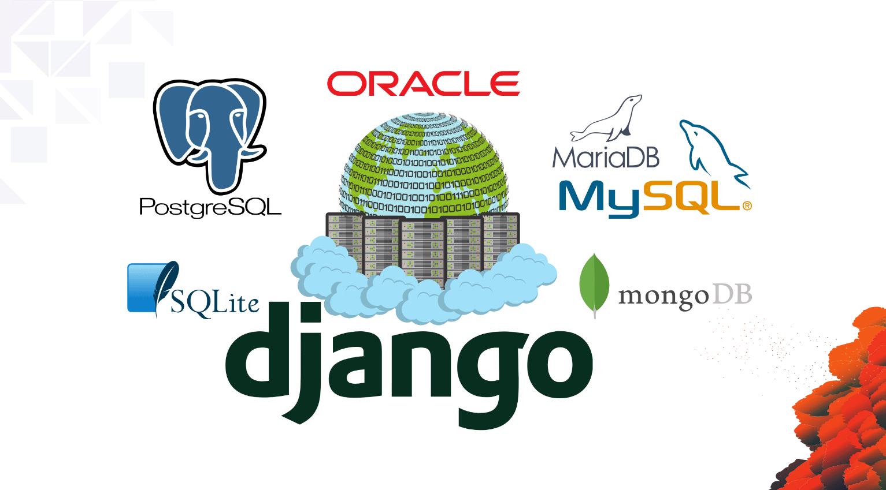

Base de datos
Django es compatible con Apache, Nginx con WSGI, Gunicorn y Cherokee con flup (un módulo de Python). Django también brinda la capacidad de ejecutar un servidor FastCGI, lo que permite su uso con cualquier servidor web que admita FastCGI, como Lighttpd o Hiawatha. También es factible emplear servidores web compatibles con WSGI de otros proveedores. Django admite oficialmente PostgreSQL, MySQL, MariaDB, SQLite y Oracle como backends de bases de datos. Microsoft SQL Server es compatible a través de django-mssql, y también hay backends disponibles para IBM Db2, SQL Anywhere y Firebird. django-nonrel es una rama que admite bases de datos NoSQL como MongoDB y el almacén de datos de Google App Engine.
Django se puede ejecutar con Jython en cualquier servidor de aplicaciones Java EE, incluidos GlassFish y JBoss. En este caso, se debe instalar django-jython para ofrecer controladores JDBC para el acceso a la base de datos, así como capacidades para compilar Django en un archivo deployment.war.
